GPTERS 24기 · 콘텐츠발행자동화
콘텐츠 발행 자동화 워크플로우, 그 후 4일
베스트 발표 이후의 디벨롭 리뷰 — bkit으로 계획부터 검증까지
발표자 MJK (Million.JK, 이진구)
2026. 10. 19 · 콘텐츠&지식 발표회
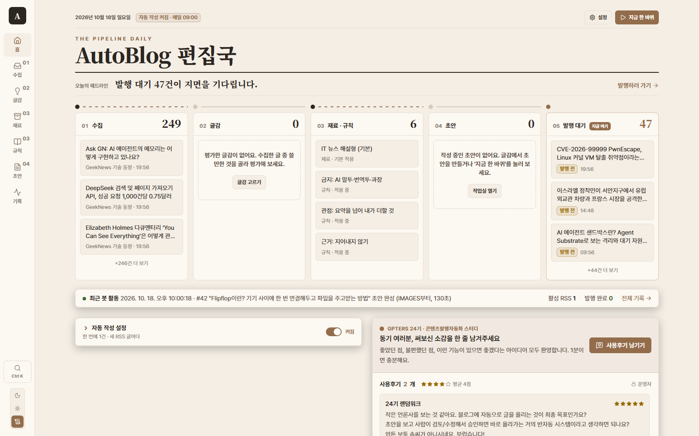
1. 안녕하세요, GPTERS 24기 콘텐츠발행자동화 과정의 MJK, 이진구입니다. 지난 목요일 발표에서 베스트 발표자로 뽑혀 오늘 이 자리에 섰습니다. 오늘은 목요일 이후 4일 동안 워크플로우를 어떻게 디벨롭했는지, 특히 "기능은 됐는데 검증이 부족했다"는 숙제를 bkit이라는 도구로 어떻게 풀었는지 15분 동안 리뷰하겠습니다. 오른쪽이 오늘 기준 실제 사이트 화면입니다.
지난 목요일 10/15 · 베스트 발표자 선정
수집부터 발행 대기까지, 6단계 파이프라인
01
수집
RSS · URL · 메모
02
글감 보드
독자 질문 · 답의 빈틈 평가
03
재료 · 규칙
강의 원칙을 글 틀과 규칙으로
04
단계형 초안
출처 → 목차 → 본문 → 교정
05
이미지 세트
Ideogram 표지 + 소제목별
06
발행 확인
중복 방지 · 공개 화면 확인
강의에서 가져온 원칙 5가지
단계형 파이프라인 · 원본 하나 → 여러 채널(OSMU) · 근거 구분 · 이미지는 글 단위로 통일 · "생성"은 "발행"이 아니다
GPTERS 24기 콘텐츠발행자동화 · MJK
02
2. 지난 목요일 발표 내용을 30초만 다시 보겠습니다. 강의 1·2주차 원칙을 제 블로그 자동화 도구에 그대로 옮겼습니다. 수집, 글감 보드, 재료와 규칙, 단계형 초안, 이미지 세트, 발행 확인까지 6단계입니다. 초안은 출처 확인부터 교정까지 단계마다 저장돼서 실패한 단계부터 이어서 할 수 있습니다.
10/15 발표 때의 사이트
그때의 워크플로우 화면
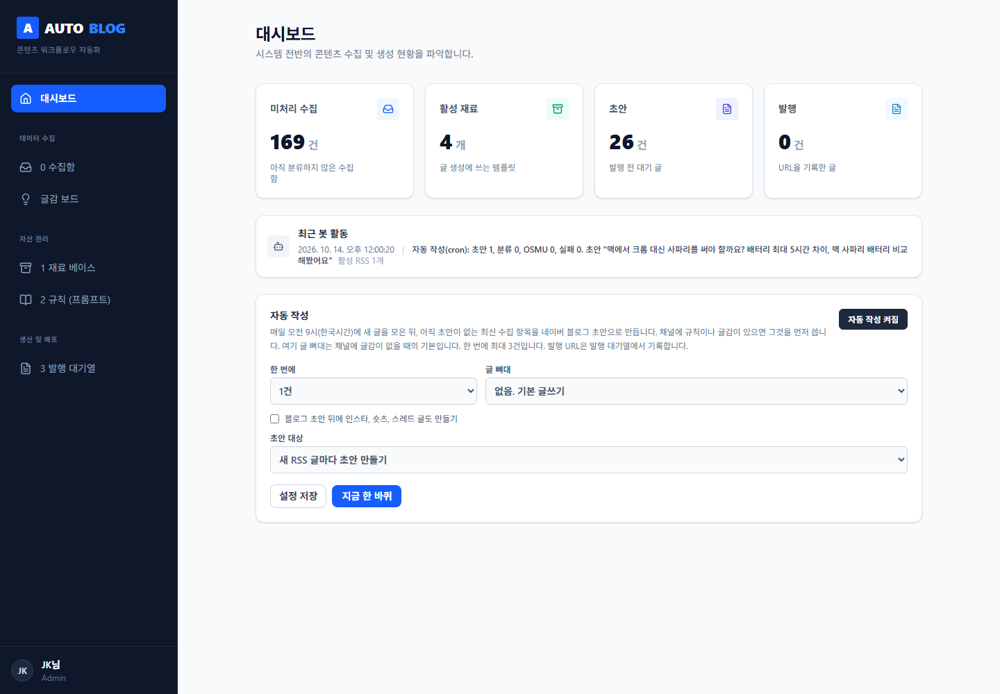
대시보드
숫자 카드 4개와 자동 작성 설정
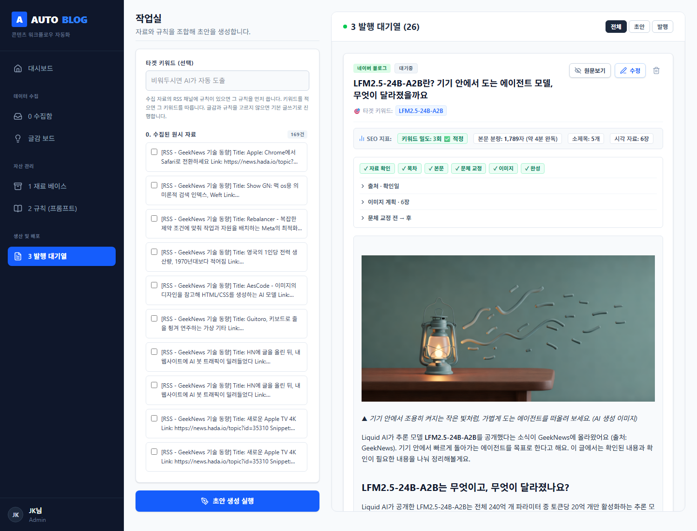
발행 대기열
단계 진행 표시 · 표지와 설명글
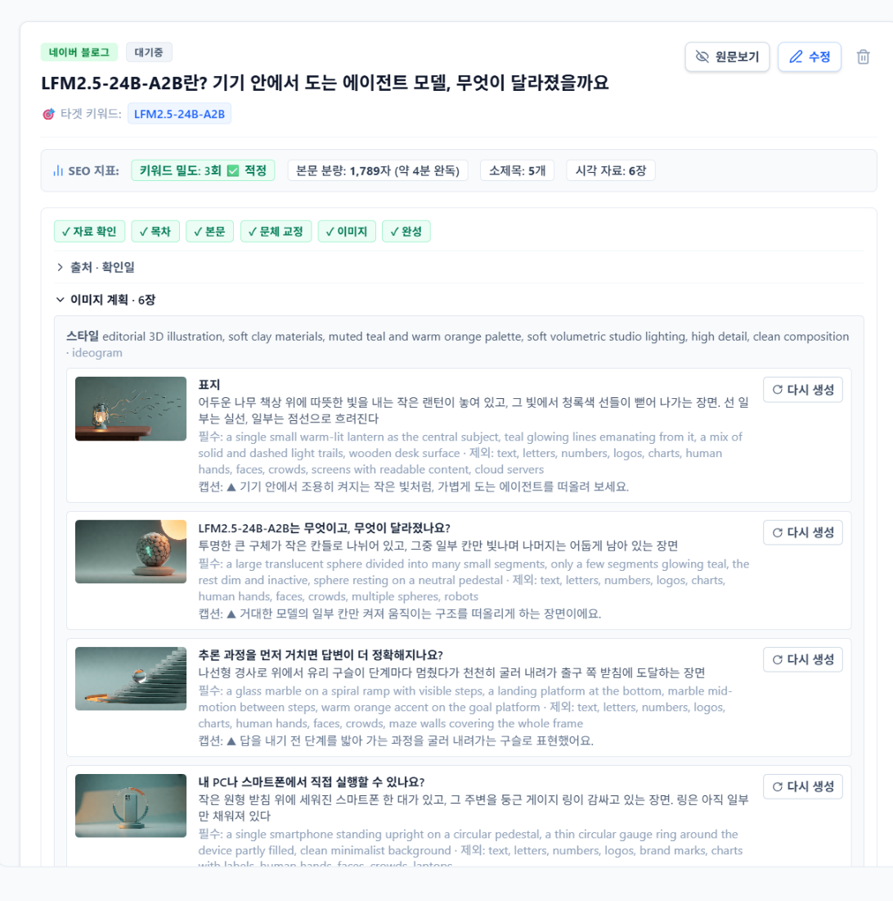
이미지 계획
장면별 필수 · 제외 요소, 다시 생성
GPTERS 24기 콘텐츠발행자동화 · MJK
03
3. 목요일 발표 때 보여드린 화면입니다. 왼쪽부터 대시보드, 발행 대기열, 이미지 계획 화면입니다. 기능은 이때 이미 대부분 있었습니다. 다만 흰 바탕에 남색 사이드바, 전형적인 관리자 템플릿 느낌이었습니다.
발표 후 돌아보니
기능은 됐는데, 남은 숙제 세 가지
01
검증
기능은 대부분 구현했지만, 실제로 돌려 보고 확인한 것은 적었다
02
디자인
관리자 템플릿 같은 화면, 흐름이 한눈에 안 보이고 휴대폰 확인도 안 됨
03
이미지 품질
글을 테스트해 보니 그림이 글 내용과 따로 놀았다
GPTERS 24기 콘텐츠발행자동화 · MJK
04
4. 발표가 끝나고 돌아보니 숙제가 세 가지 남아 있었습니다. 첫째, 검증입니다. 기능은 다 만들었는데 실제로 돌려서 확인한 건 많지 않았습니다. 둘째, 디자인입니다. 셋째, 이미지 품질입니다. 글을 테스트해 보니 그림이 글 내용과 잘 맞지 않았습니다. 오늘 발표는 이 세 가지를 어떻게 풀었는지에 대한 이야기입니다.
10/15 → 10/18
어떤 AI 도구로 만들었나
~ 10/15 · 기능 구현
세 가지 AI를 번갈아 가며
Claude Code · Sonnet 5.5 (x-high)
Gemini · 3.8 Flash (high)
Grok · 4.7
기능은 빠르게 늘었지만 검증은 부족
10/16 ~ 10/18 · 검증 · 보완
한 도구 + 검증 플러그인
Claude Code · Opus 5.5 (x-high)
+ bkit 플러그인 (PDCA)
계획 → 설계 → 구현 → 검수 → 보고를 한 루프로
GPTERS 24기 콘텐츠발행자동화 · MJK
05
5. 목요일 발표까지는 Claude Code의 Sonnet 5.5, Gemini 3.8 Flash, Grok 4.7을 번갈아 쓰면서 워크플로우를 보완했습니다. 기능은 빨리 늘었는데, 도구가 바뀔 때마다 맥락이 끊기고 검증은 늘 뒤로 밀렸습니다. 그래서 발표 이후에는 Claude Code Opus 5.5 하나로 정리하고, 계획부터 검증까지 한 번에 도는 bkit 플러그인을 붙였습니다.
디자인 보완 · 10/16
대시보드 시안 A · B · C
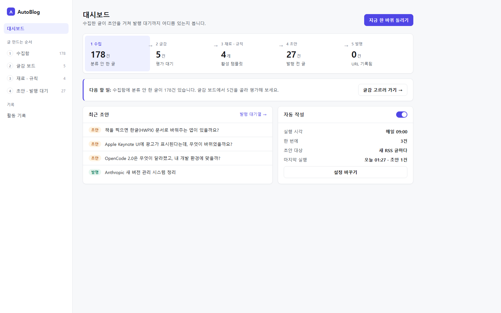
A · 파이프라인 라이트
흰 바탕 + 인디고, 상단 5칸 진행 줄
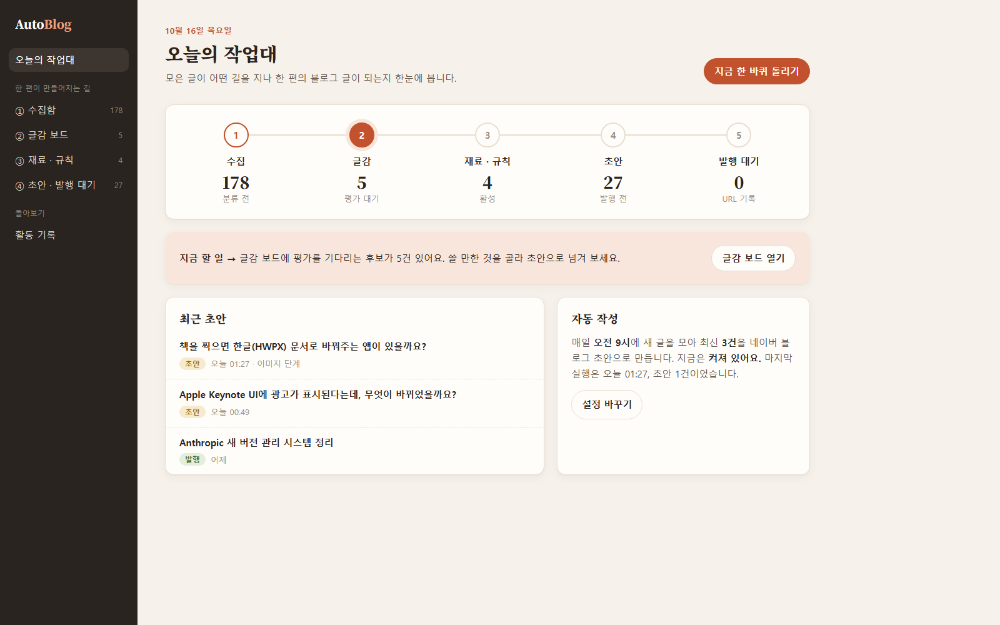
B · 웜 에디토리얼
종이색 + 테라코타, 명조 제목
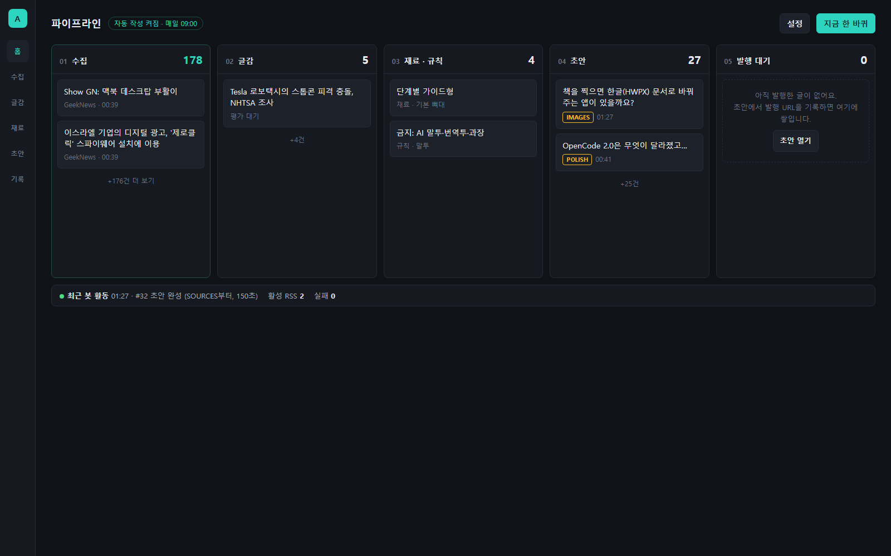
C · 보드 콘솔 — 채택
다크 + 청록, 5열 칸반 보드
C안을 고른 이유: 수집 → 글감 → 재료·규칙 → 초안 → 발행 대기, 글이 어디쯤 있는지 한눈에 보인다
GPTERS 24기 콘텐츠발행자동화 · MJK
06
6. 디자인은 대시보드 한 장짜리 시안을 세 가지 만들어 비교했습니다. A는 흰 바탕에 인디고, B는 종이색에 테라코타와 명조 제목, C는 어두운 바탕에 5열 칸반 보드입니다. 저는 C를 골랐습니다. 글 하나가 수집부터 발행 대기까지 지금 어디에 있는지가 한눈에 보이기 때문입니다.
C안 적용 전 → 후
숫자 카드에서 5열 파이프라인 보드로
전 · 10/15
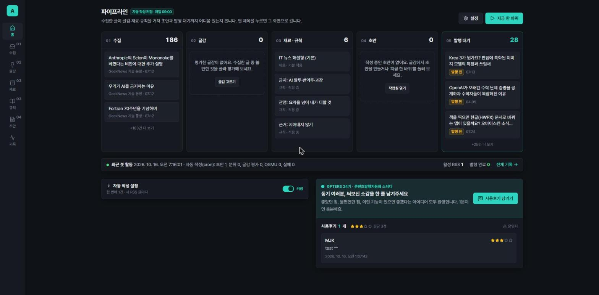
후 · 10/16 (C안)
GPTERS 24기 콘텐츠발행자동화 · MJK
07
7. C안을 실제로 적용한 전후입니다. 왼쪽은 숫자 카드 네 개가 전부였던 목요일 화면, 오른쪽은 C안을 적용한 화면입니다. 수집 186건, 재료·규칙 6개, 발행 대기 28건처럼 칸마다 글이 쌓여 있어서 병목이 어디인지 바로 보입니다.
최종 화면 · 10/18
지금의 AutoBlog 편집국
화면 테마 3가지
어두운 · 흰 · 종이(기본). C안 보드 구조는 그대로
명령창 Ctrl K
검색 · 이동 · 붙여넣기 수집, 휴대폰에서도
이미지 관련성 점수
장면마다 점수와 이유, 세트 다시 만들기
사용후기 게시판
동기 여러분의 소감을 바로 받기
GPTERS 24기 콘텐츠발행자동화 · MJK
08
8. 이게 어젯밤 기준 최종 화면입니다. C안의 5열 보드 구조는 그대로 두고, 화면 테마를 어두운 화면, 흰 화면, 종이 화면 세 가지로 늘렸습니다. 기본은 종이 화면입니다. 명령창은 휴대폰에서도 키보드에 가리지 않게 고쳤고, 이미지마다 관련성 점수가 붙습니다. 대시보드 아래에는 사용후기 게시판이 있습니다.
도구 소개 · Claude Code 플러그인
bkit: 계획부터 검증까지 한 번에
AI가 만든 코드를 자기가 쓴 설계서와 대조해 검증하는 플러그인. PDCA(Plan · Do · Check · Act) 루프를 단계마다 사람에게 확인받으며 돌린다.
시작은 명령 한 줄, 이후는 한마디
/bkit:pdca plan 기능이름
→ "다음 진행"
자동화 단계 L0~L4 중 L1(단계마다 확인)으로 사용
Plan
계획서 · 성공 기준
Design
설계안 A·B·C 중 선택
Do
구현 + 검증 4단계
Check
설계 일치율 + 코드 분석
Act
검수에서 나온 문제 수정
Report
보고서 · 커밋 · PR
Archive
문서 보관
GPTERS 24기 콘텐츠발행자동화 · MJK
09
9. bkit을 한 장으로 소개하겠습니다. Claude Code에 설치하는 플러그인으로, AI가 만든 코드를 자기가 쓴 설계서와 대조해서 검증해 줍니다. 계획, 설계, 구현, 검수, 수정, 보고, 보관이 하나의 루프입니다. 핵심은 Check 단계입니다. 설계와 코드가 얼마나 일치하는지 점수로 매기고, 비용·보안·동시성 문제를 따로 분석합니다. 단계마다 "이 범위가 맞나요?", "설계안 셋 중 무엇?"처럼 사람에게 물어봐서, 저는 거의 "다음 진행"만 입력했습니다.
10/16 ~ 10/18 · PR 7개
PDCA를 네 바퀴 돌렸다
| 기능 | 한 일 | 설계 일치율 | 테스트 | PR |
|---|---|---|---|---|
| palette-mobile | 명령창 휴대폰 대응 | 99% | 27 | #17 #18 |
| image-relevance | 이미지 채점 · 다시 만들기 | 94.8 → 99.2% | 45 | #19 #20 |
| image-relevance-v2 | 대상은 하나 · 채점 규칙 정리 | 98 → 100% | 74 | #21 #22 |
| ai-token-warning | AI 응답 길이 경고 | 98 → 100% | 90 | #23 |
일치율의 "→"는 검수 뒤 수정(Act)을 거친 값. 테스트는 사이클이 끝났을 때의 자동 테스트 수.
GPTERS 24기 콘텐츠발행자동화 · MJK
10
10. 목요일 이후 사흘 동안 이 루프를 네 바퀴 돌렸습니다. 명령창 모바일 대응, 이미지 관련성 1차와 2차, 그리고 AI 응답 길이 경고입니다. 매 바퀴마다 검수에서 문제가 나왔고, 고친 뒤 설계 일치율이 95% 안팎에서 100% 가까이 올라갔습니다. 자동 테스트는 27개에서 90개로 늘었습니다. 이제부터는 가장 공을 들인 이미지 품질 이야기를 하겠습니다.
이미지 품질 · 문제
그림이 글과 따로 놀았다
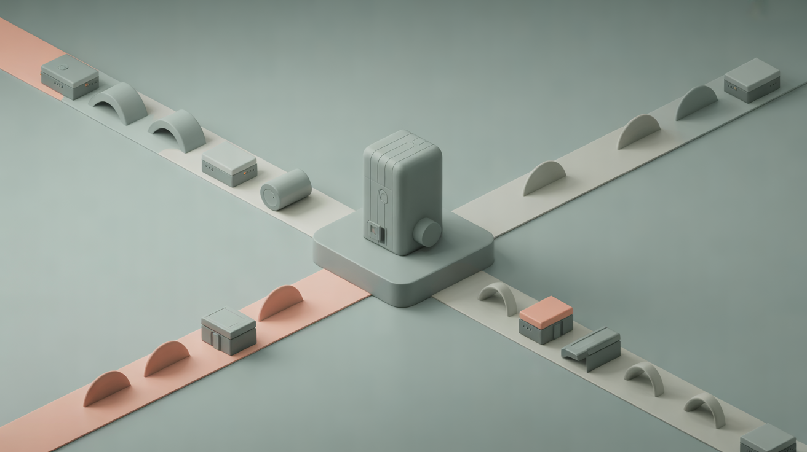
#42 「어떤 연결 방식을 지원하나요?」 · 3점
#43 「비밀번호 검사 기능을 끄려면?」 · 2점
운영 글 3편 관련성 평균 (5점 만점)
3.6 · 2.3 · 3.2
#42 · #43 · #44
상징물만 그림
글 속 실제 대상 없이 점토 소품 같은 은유
예시 색이 번짐
프롬프트 예시의 청록 · 주황이 모든 글에
확인 장치 없음
그림이 글과 맞는지 아무도 보지 않음
GPTERS 24기 콘텐츠발행자동화 · MJK
11
11. 이미지 문제부터 보겠습니다. 왼쪽은 "어떤 연결 방식을 지원하나요?" 소제목에 들어간 그림, 가운데는 "비밀번호 검사 기능을 끄려면?"에 들어간 그림입니다. 예쁘긴 한데 글 내용과는 거의 상관이 없습니다. 원인을 bkit 계획 단계에서 세 가지로 정리했습니다. 글 속 실제 대상 없이 상징물만 그렸고, 프롬프트 예시에 넣은 색이 모든 글에 번졌고, 그림이 글과 맞는지 확인하는 장치가 없었습니다. 그래서 운영 글 세 편을 AI로 채점해 보니 평균 3.6, 2.3, 3.2점이었습니다.
이미지 품질 · 해결
대상을 먼저 정하고, AI가 보고 채점한다
1
대상 정하기
본문에 나오는 실제 사물 · 행동 하나
2
화풍 고르기
뉴스는 사진풍, 개념은 일러스트
3
생성
Ideogram, 한 글은 한 화풍
4
AI 채점
그림을 보고 1~5점과 이유
5
다시 만들기
3점 미만만, 글당 최대 2장
v1 대상 예시
"카드 서랍장 / a wall of card drawers"
한국어로 고르고, 이미지 모델에는 영어만 보낸다
v2에서 더한 규칙
대상은 개념 하나, 화면 속 내용은 대상 금지
"블루투스·LAN·인터넷"처럼 나열하면 코드가 찾아 다시 계획
GPTERS 24기 콘텐츠발행자동화 · MJK
12
12. 해결 방법은 다섯 단계입니다. 먼저 소제목 본문에 실제로 나오는 대상 하나를 정합니다. 글 종류에 따라 화풍을 고르고, 이미지를 만든 뒤에는 AI가 그 그림을 직접 보고 1점에서 5점까지 채점합니다. 3점 미만이면 한 단계 높은 품질로 다시 만들고, 비용이 넘치지 않게 글당 2장까지만 합니다. 2차에서는 대상을 개념 하나로 좁혔습니다. "블루투스·LAN·인터넷"처럼 여러 개를 나열하면 그림에 일부만 나와서, 코드가 찾아내 그 장면만 다시 계획하게 했습니다.
전 → 후 · #43 Home Assistant 비밀번호 검사 논란
「비밀번호 검사 기능을 끄려면?」
전 · 2점 — 다이얼과 상자, 무엇을 끄는지 안 보임
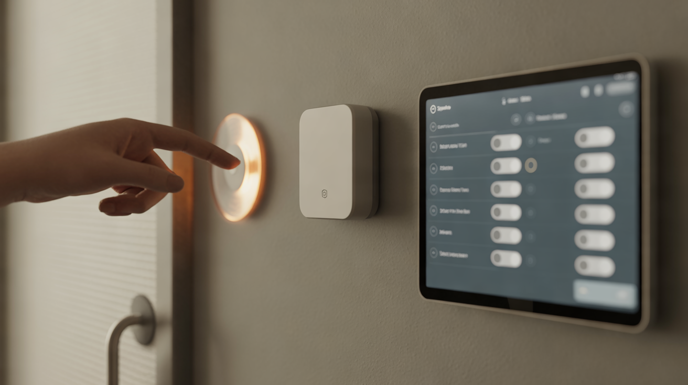
후 · 4점 — 벽걸이 태블릿의 설정 토글을 누르는 손
#43 전체 평균 2.3 → 4.0 · 뉴스 글이라 사진풍으로 바뀌었다
GPTERS 24기 콘텐츠발행자동화 · MJK
13
13. 가장 크게 바뀐 #43입니다. Home Assistant의 비밀번호 검사 논란을 다룬 뉴스 글인데, "기능을 끄려면?" 소제목에 예전에는 다이얼과 상자 그림이 들어갔습니다. 2점이었습니다. 지금은 벽걸이 태블릿의 설정 토글을 손으로 누르는 장면이고 4점입니다. 뉴스 글이라 화풍도 점토 3D에서 사진풍으로 바뀌었습니다. 글 전체 평균은 2.3에서 4.0이 됐습니다.
전 → 후 · #42 Flipflop 파일 공유 도구
「어떤 연결 방식을 지원하나요?」
전 · 3점 — 상징적인 교차로, 연결 방식이 안 보임
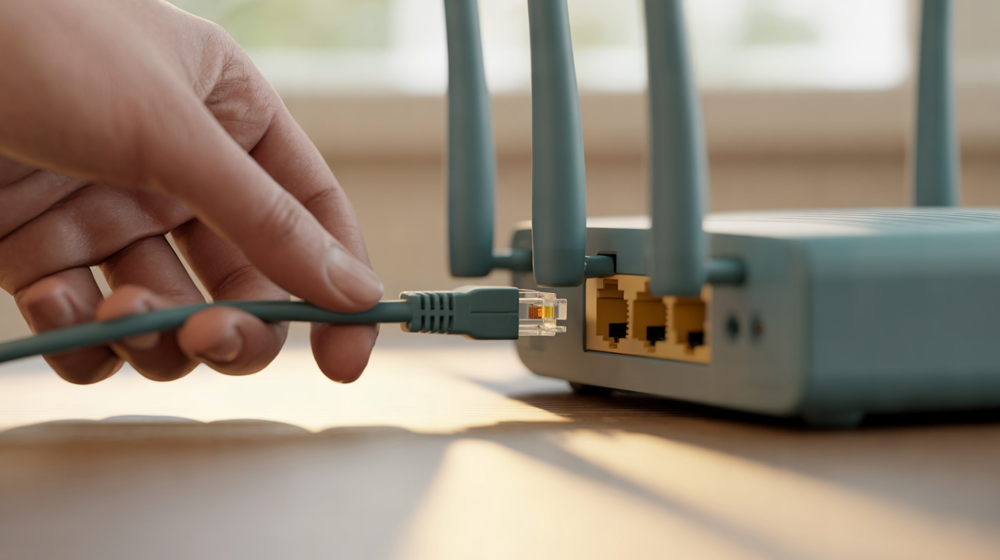
후 · 4점 (2번 채점 모두) — 공유기에 랜 케이블을 꽂는 손
1차에선 "블루투스·LAN·인터넷"을 한 장에 담다 3점 → 2차에서 LAN 하나로 좁혀 4점
GPTERS 24기 콘텐츠발행자동화 · MJK
14
14. #42 Flipflop 글의 "어떤 연결 방식을 지원하나요?" 소제목입니다. 원래 그림은 교차로 같은 상징물이었고 3점이었습니다. 1차 개선 때는 블루투스, LAN, 인터넷 세 가지를 한 장에 담으려다 LAN만 보여서 또 3점이었습니다. 2차에서 대상을 개념 하나로 좁히자, 손이 공유기에 랜 케이블을 꽂는 분명한 장면이 나왔고 두 번 채점 모두 4점이었습니다.
결과
숫자로 본 4일
3.05 → 3.89
운영 글 3편 이미지 관련성 평균 (19장, 5점 만점)
2.3 → 4.0
가장 낮던 #43 글의 평균
27 → 90
자동 테스트 수 (검증 4단계 매번 통과)
약 $0.14
채점 · 다시 만들기로 늘어나는 글당 최대 비용
GPTERS 24기 콘텐츠발행자동화 · MJK
15
15. 숫자로 정리하면 이렇습니다. 운영 글 세 편, 이미지 19장의 관련성 평균이 3.05에서 3.89로 올랐습니다. 가장 낮던 #43은 2.3에서 4.0이 됐습니다. 자동 테스트는 27개에서 90개로 늘었고, 사이클마다 타입체크, 린트, 빌드, 테스트 네 단계를 모두 통과했습니다. 채점과 다시 만들기로 늘어나는 비용은 글 한 편에 최대 14센트 정도로 묶어 뒀습니다.
Check 단계의 값
검수가 잡아낸 것들
| 찾은 문제 | 막은 방법 |
|---|---|
| AI의 생각 토큰까지 길이 제한에 들어가 이미지 계획이 4번 중 1번 잘림 | 한도 상향 + 80% 넘으면 경고 기록 |
| "이미지 세트 다시 만들기"를 무제한 누를 수 있음 (회당 약 $0.35) | 글마다 24시간에 3번 |
| 다시 만드는 중 장면 버튼을 누르면 진행 상황을 덮어씀 | 잠금 + 버튼 비활성화 |
| 잘린 AI 응답을 그대로 저장하던 곳 3군데 (OSMU · 요약 · 수집 처리) | 잘리면 오류로 알림 |
| 채점 기준만 바꿔도 점수가 +0.22 오름 | 기준 효과를 먼저 재고, 2번 채점 |
| 노트에 엉터리 숫자가 그려진 그림에 채점기는 5점 | 사람 눈 점검 → 글자를 부르는 장면 금지 |
GPTERS 24기 콘텐츠발행자동화 · MJK
16
16. bkit을 쓴 가장 큰 이유가 이 장입니다. 검수 단계에서 제가 미처 생각 못 한 문제들이 나왔습니다. AI가 답하기 전에 생각하는 토큰까지 길이 제한에 들어가서 응답이 4번 중 1번 잘렸고, 다시 만들기 버튼은 무제한으로 돈을 쓸 수 있었고, 동시에 누르면 작업이 덮어써졌습니다. 마지막 두 줄이 특히 중요했습니다. 채점 기준만 바꿔도 점수가 오른다는 걸 먼저 재서 목표를 올렸고, 노트에 숫자가 그려진 그림을 채점기는 5점을 줬지만 제가 눈으로 보고 찾아냈습니다.
돌아보며
배운 점 세 가지
검증을 도구가 챙긴다
계획 → 설계 → 구현 → 검수 → 보고가 한 루프라, 바쁠 때도 "확인"이 빠지지 않았다
점수는 흔들린다
같은 그림도 ±1점. 기준을 바꾸면 그 효과부터 재고, 2번 이상 채점해 비교한다
마지막은 사람 눈
채점기가 놓친 숫자 그림을 눈으로 찾았다. 자동화할수록 사람이 보는 단계를 남긴다
GPTERS 24기 콘텐츠발행자동화 · MJK
17
17. 배운 점 세 가지입니다. 첫째, 검증을 사람 의지에 맡기지 않고 도구가 루프로 챙기니 바쁠 때도 확인이 빠지지 않았습니다. 둘째, AI 점수는 흔들립니다. 같은 그림도 1점씩 오르내리니 기준을 바꿀 땐 그 효과부터 재고, 두 번 이상 채점해서 비교해야 합니다. 셋째, 마지막 확인은 사람 눈입니다. 자동화할수록 사람이 보는 단계를 일부러 남겨야 합니다.
GPTERS 24기 동기 여러분께
직접 써 보세요, 무료로 열어 두었습니다
소감과 문제점은 대시보드 아래 「사용후기 남기기」에 남겨 주세요. 반영해서 더 나은 버전으로 다시 공유하겠습니다.
GPTERS 24기 콘텐츠발행자동화 · MJK
18
18. 이 사이트는 모두에게 공개되어 있습니다. 글쓰기는 Claude API의 Haiku 5.5, 이미지는 Ideogram API를 연결해 두었고 무료로 쓰실 수 있으니 마음껏 써 보세요. 코드는 GitHub에도 올려 두었습니다. 가져가서 개인용으로 쓰셔도 됩니다. 써 보시고 소감이나 문제점을 대시보드 아래 사용후기에 남겨 주시면, 반영해서 더 발전된 버전으로 다시 공유드리겠습니다.
GPTERS 24기 · 콘텐츠발행자동화
감사합니다
MJK (Million.JK, 이진구)
19auto-blog.vercel.app · github.com/Million-IMP/19auto-blog
19. 들어 주셔서 감사합니다. 질문 받겠습니다.